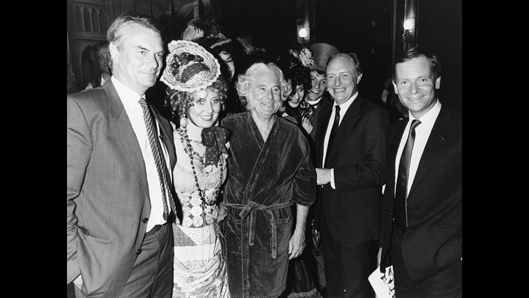

1987

CAST
John Jasper
-
David Burt
Reverend Septimus Crisparkle
-
Martin Wimbush
Durdles
-
Phil Rose
Bazzard
-
Paul Bentley
Neville Landless
-
Mark Ryan
Edwin Drood
-
Julia Hills
Mayor Thomas Sapsea
-
Ernie Wise
Rosa Bud
-
Sarah Payne
Helena Landless
-
Marilyn Cutts
Princess Puffer
-
Lulu
Deputy
-
Anthony Lennon
CREATIVE TEAM
Music
-
Rupert Holmes
Lyrics
-
Rupert Holmes
BACKGROUND
There are several differences between the musical and the novel. The tone of Dickens' original book was somewhat bleak (as was Dickens' style), whereas the show is considerably more lighthearted and played for comedy. The most notable difference in characterization involves Jasper: though Dickens' character is undoubtedly repressed and troubled, he is not depicted with the full-fledged split personality that he appears to have in the musical. Several minor characters are omitted, and the roles of others are expanded. In the musical, Bazzard is Crisparkle's assistant, whereas in the novel he is employed by Rosa's guardian, Mr. Grewgious. Meanwhile, in order to increase the interactivity of the play and introduce doubt as to who the murderer is, the musical omits several of the novel's clues that Jasper is the killer and introduces clues which do not appear in the novel pointing at other suspects.